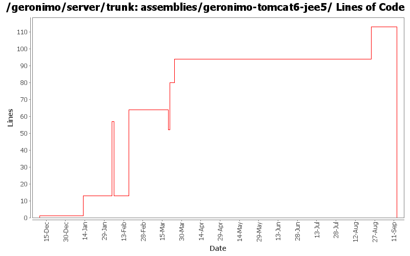

[root]/assemblies/geronimo-tomcat6-jee5
 src
(0 files, 0 lines)
src
(0 files, 0 lines)
 main
(0 files, 0 lines)
main
(0 files, 0 lines)
 assembly
(0 files, 0 lines)
assembly
(0 files, 0 lines)
 resources
(0 files, 0 lines)
resources
(0 files, 0 lines)
 bin
(0 files, 0 lines)
bin
(0 files, 0 lines)
 var
(0 files, 0 lines)
var
(0 files, 0 lines)
 config
(0 files, 0 lines)
config
(0 files, 0 lines)
 var
(0 files, 0 lines)
var
(0 files, 0 lines)
 config
(0 files, 0 lines)
config
(0 files, 0 lines)

| Author | Changes | Lines of Code | Lines per Change |
|---|---|---|---|
| Totals | 22 (100.0%) | 230 (100.0%) | 10.4 |
| gdamour | 3 (13.6%) | 104 (45.2%) | 34.6 |
| djencks | 5 (22.7%) | 80 (34.8%) | 16.0 |
| gawor | 1 (4.5%) | 19 (8.3%) | 19.0 |
| dims | 1 (4.5%) | 12 (5.2%) | 12.0 |
| jdillon | 6 (27.3%) | 6 (2.6%) | 1.0 |
| dain | 1 (4.5%) | 6 (2.6%) | 6.0 |
| prasad | 1 (4.5%) | 1 (0.4%) | 1.0 |
| pmcmahan | 3 (13.6%) | 1 (0.4%) | 0.3 |
| hogstrom | 1 (4.5%) | 1 (0.4%) | 1.0 |
Rename jee5 bits to javaee5
0 lines of code changed in 3 files:
expose command line client for jaxws-tools
19 lines of code changed in 1 file:
* updated copyright date to 2007
1 lines of code changed in 1 file:
Changed trunk to 2.1-SNAPSHOT
1 lines of code changed in 1 file:
GERONIMO-3340 first half disable copy of directory stuff in main build
12 lines of code changed in 1 file:
GERONIMO-3272 eliminate the geronimo-transaction-jta11 module, we are entirely on jta11 now. Also refix logging error for non-NamedXAResource. Also make jpa stuff use spec interfaces and not drag ejb spec into the tm
1 lines of code changed in 1 file:
GERONIMO-2965 GERONIMO-3008 GERONIMO-3010 Tomcat annotation processing with lots of other improvements. Uses LifecycleProvider interface proposed in GERONIMO-3010
16 lines of code changed in 1 file:
Uniformize jetty/tomcat plans, assemblies
45 lines of code changed in 1 file:
Clean up assembly modules usage of resources, use the same filtering
Only install config.xml as writable in assemblies, none of the other files need that
3 lines of code changed in 1 file:
r6701@Bliss: jason | 2007-03-19 16:02:03 -0700
(GERONIMO-2980) Rename configs/activemq to configs/activemq-ra
1 lines of code changed in 1 file:
Second attempt to change the way the online/offline deployers and the JSR88
deployment driver work. The first attempt was breaking the TCK amd the
eclipse plugin.
Online deployer, i.e. deployer.jar, boots a Kernel to load its dependencies,
e.g. geronimo-deploy-tool, and registers the available ModuleConfigurers with
the DeploymentManager.
ModuleConfigurers to be registered are loaded by the persistent configuration
list jsr88-configurer-config.xml.
In the case of an offline deployment, the online deployer starts the
offline-deployer configuration within the same Kernel. In turn, the
offline-deployer configuration starts a list of configurations to register
the available module builders.
Add a log4j configuration for the online deployer.
DeploymentFactoryBootstrapper is the new JSR88 deployment driver. It boots a
kernel; starts the configuration list jsr88-configurer-config.xml; retrieves
the "actual" DeploymentFactory implementation from the kernel; and delegates
to this retrieved imoplementation.
The JSR88 JAR driver is now named jsr88-deploymentfactory.jar.
This fixes:
* GERONIMO-2794 - Improve online deployer to register ModuleConfigurers from the repository; and
* GERONIMO-2767 - Minimize side effects of the offline deployer
54 lines of code changed in 1 file:
Use maven-dependency-plugin
2 lines of code changed in 1 file:
include corba bits
6 lines of code changed in 1 file:
Revert deployer changes as they do break the Eclipse plugin and TCK.
I will investigate offline.
svn merge -r503370:503369 .
3 lines of code changed in 1 file:
Online deployer, i.e. deployer.jar, boots a Kernel to load its dependencies,
e.g. geronimo-deploy-tool, and registers the available ModuleConfigurers with
the DeploymentManager.
ModuleConfigurers to be registered are loaded by the persistent configuration
list jsr88-configurer-config.xml.
In the case of an offline deployment, the online deployer starts the
offline-deployer configuration within the same Kernel. In turn, the
offline-deployer configuration starts a list of configurations to register
the available module builders.
Add a log4j configuration for the online deployer.
This fixes:
* GERONIMO-2794 - Improve online deployer to register ModuleConfigurers from the repository; and
* GERONIMO-2767 - Minimize side effects of the offline deployer
47 lines of code changed in 1 file:
Initial openejb3 integration
6 lines of code changed in 1 file:
Fix for GERONIMO-2727 - Enable axis2-deployer in jetty and tomcat jee5 assemblies
12 lines of code changed in 1 file:
change "tomcat" artifactIds to "tomcat6" for :
configs/tomcat6
configs/tomcat6-deployer
modules/geronimo-tomcat6
modules/geronimo-tomcat6-builder
assemblies/geronimo-tomcat6-jee5
assemblies/geronimo-tomcat6-minimal
updated various poms, deployment plans, and plugin-metadata.xml files to reference the new tomcat6 artifactId
1 lines of code changed in 3 files: